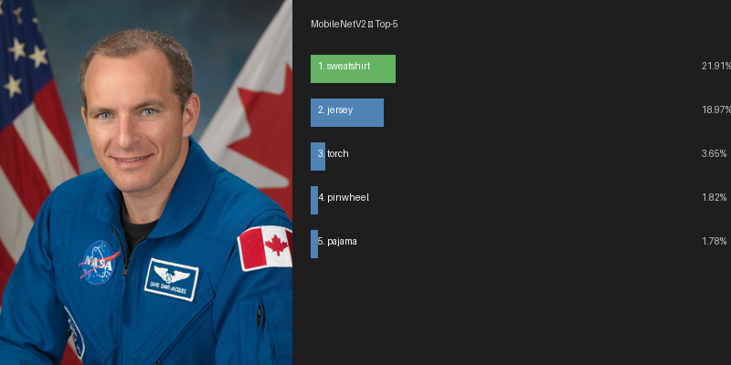
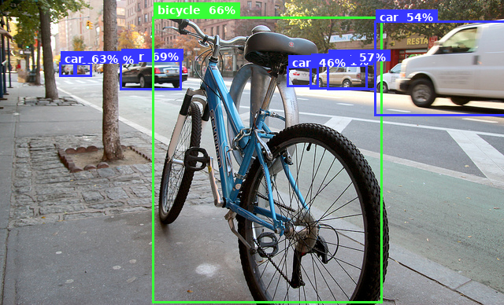
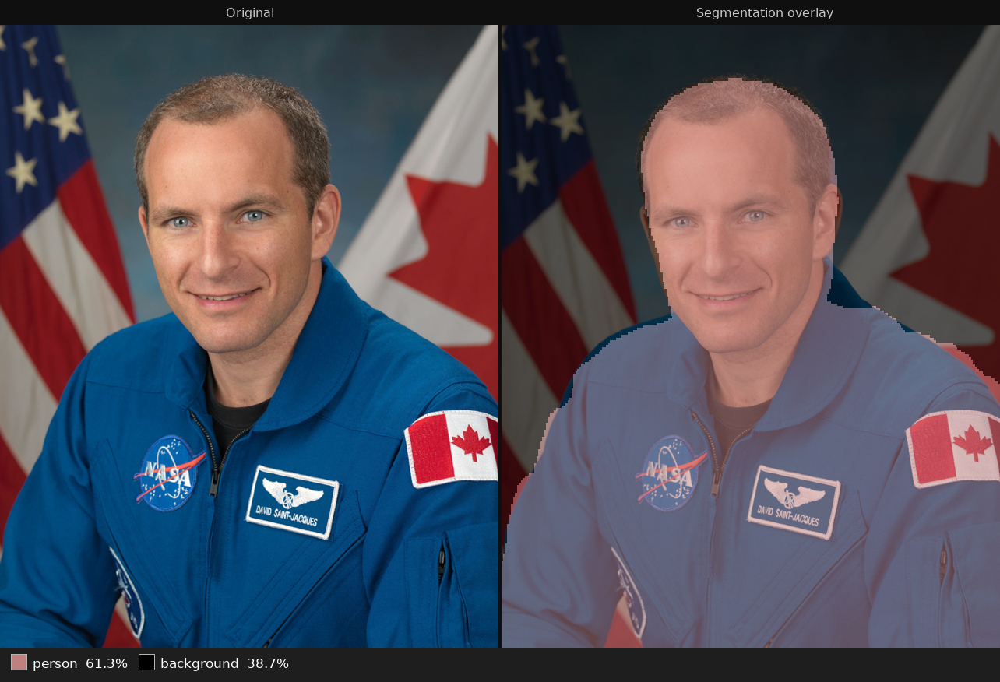

TensorFlow Lite (TFLite) is a lightweight ML inference runtime designed for edge and embedded platforms. The tflite-runtime package in the QNX aports repository brings TFLite to QNX 8.0, including the XNNPACK neural network backend for multi-threaded CPU inference.
This codelab walks through three classic computer vision tasks — image classification, object detection, and semantic segmentation — each backed by a different MobileNet-family model. It finishes with a combined benchmark so you can measure throughput on your target.
tflite-runtime on QNX 8.0 and verify the Python bindingInterpreter API works: tensors, shapes, dtypes, and delegatesqnx-ports APK repository configured on the targetNote on hardware: This codelab uses CPU inference via XNNPACK, which runs on any QNX 8.0 target regardless of GPU. Benchmark numbers are shown for both Raspberry Pi 5 (aarch64, Cortex-A76) and a 4-vCPU x86_64 QEMU VM.
Install the TFLite runtime and its Python bindings from the qnx-ports APK repository.
apk add tflite-runtime python3-tflite-runtime python3-numpy python3-pillow
Verify the installation:
python3 -c "import tflite_runtime.interpreter as tflite; print('TFLite OK')"
You should see:
TFLite OK
If the import fails, confirm the qnx-ports repository is enabled:
cat /etc/apk/repositories
The qnx-ports community repository URL should be present. If it is not, add it and run apk update before retrying.
The models used in this codelab are from the TFLite Model Zoo. Run the following commands on your QNX target.
cd ~
# MobileNetV2 — image classification (float32, ~14 MB)
curl -sL -o mobilenet_v2.tflite \
"https://storage.googleapis.com/download.tensorflow.org/models/mobilenet_v2_1.0_224.tflite"
# ImageNet labels (1001 classes, line 0 = background)
curl -sL -o labels.txt \
"https://storage.googleapis.com/download.tensorflow.org/data/ImageNetLabels.txt"
# SSD MobileNet V1 — object detection (uint8, COCO, ~7 MB)
curl -sL -o detect.zip \
"https://storage.googleapis.com/download.tensorflow.org/models/tflite/coco_ssd_mobilenet_v1_1.0_quant_2018_06_29.zip"
unzip -o detect.zip detect.tflite && rm detect.zip
# COCO labelmap
curl -sL -o labelmap.txt \
"https://storage.googleapis.com/download.tensorflow.org/models/tflite/coco_ssd_mobilenet_v1_1.0_quant_2018_06_29/labelmap.txt"
# DeepLab v3 — semantic segmentation (float32, PASCAL VOC, ~3.5 MB)
curl -sL -o deeplabv3_257.tflite \
"https://storage.googleapis.com/download.tensorflow.org/models/tflite/gpu/deeplabv3_257_mv_gpu.tflite"
You also need a test image. Any JPEG photograph works. A portrait with a clearly visible person gives the best results across all three tasks. Copy one from your host:
scp /path/to/photo.jpg qnxuser@<target-ip>:~/test.jpg
The examples in this codelab use a NASA portrait of Canadian astronaut David Saint-Jacques (public domain). Download it directly on your target:
curl -sL -o test.jpg \
"https://upload.wikimedia.org/wikipedia/commons/f/f8/David_Saint-Jacques_official_portrait.jpg"
Confirm everything is in place:
ls -lh ~/*.tflite ~/labels.txt ~/labelmap.txt
Image classification answers: what is the dominant object in this image?
MobileNetV2 was trained on ImageNet — 1000 everyday object categories plus a catch-all background class for images that don't clearly belong to any of them. Given a photograph, it returns a confidence score for each class; the highest score is the model's prediction.
The model requires colour images resized to exactly 224×224 pixels, with each pixel value expressed as a decimal in the range 0.0–1.0 rather than the standard 0–255 integer. This scaling is called normalisation — it must match what the model saw during training, otherwise predictions will be wrong. The classify.py script handles both the resizing and normalisation automatically before running inference.

Before writing inference code it is useful to look at the model's tensor shapes:
python3 - << 'EOF'
import tflite_runtime.interpreter as tflite
interp = tflite.Interpreter(model_path='mobilenet_v2.tflite', num_threads=4)
interp.allocate_tensors()
inp = interp.get_input_details()[0]
out = interp.get_output_details()[0]
print(f"Input #{inp['index']}: shape={inp['shape']} dtype={inp['dtype'].__name__}")
print(f"Output #{out['index']}: shape={out['shape']} dtype={out['dtype'].__name__}")
EOF
Input #0: shape=[1, 224, 224, 3] dtype=float32
Output #0: shape=[1, 1001] dtype=float32
The input shape [1, 224, 224, 3] encodes one 224×224 colour image. The four dimensions are [batch, height, width, channels]:
1 because on a device we classify one image at a time. During model training, large batches are processed simultaneously for efficiency; at inference we don't need that.The output shape [1, 1001] is one confidence score per class — the 1000 ImageNet categories plus the background class — for each image in the batch.
Create ~/classify.py:
import sys
import numpy as np
from PIL import Image
import tflite_runtime.interpreter as tflite
MODEL = 'mobilenet_v2.tflite'
LABELS = 'labels.txt'
IMAGE = sys.argv[1] if len(sys.argv) > 1 else 'test.jpg'
# Load class labels — one name per line; the index matches the model's output position
with open(LABELS) as f:
labels = [l.strip() for l in f]
# Load the model and allocate memory for its input/output tensors
# num_threads=4 enables XNNPACK multi-threaded CPU inference
interp = tflite.Interpreter(model_path=MODEL, num_threads=4)
interp.allocate_tensors()
# Read the input dimensions directly from the model so the script works with any TFLite model
inp = interp.get_input_details()[0]
out = interp.get_output_details()[0]
h, w = inp['shape'][1], inp['shape'][2]
# Resize the image to the model's required dimensions, then normalise pixels from 0–255 to 0.0–1.0
img = Image.open(IMAGE).convert('RGB').resize((w, h))
data = np.expand_dims(np.array(img, dtype=np.float32) / 255.0, axis=0)
# Copy the prepared image into the model's input tensor and run inference
interp.set_tensor(inp['index'], data)
interp.invoke()
# Read the output scores and rank the top 5 classes in descending order
scores = interp.get_tensor(out['index'])[0]
top5 = np.argsort(scores)[::-1][:5]
print(f"Image: {IMAGE}")
print("Top-5 predictions:")
for rank, idx in enumerate(top5, 1):
name = labels[idx] if idx < len(labels) else f'class_{idx}'
print(f" {rank}. {name:<40} {scores[idx]*100:.2f}%")
Run it from your home directory:
cd ~ && python3 classify.py test.jpg
Expected output for the Saint-Jacques portrait:
Image: test.jpg
Top-5 predictions:
1. sweatshirt 21.91%
2. jersey 18.97%
3. torch 3.65%
4. pinwheel 1.82%
5. pajama 1.78%
Note: MobileNetV2 was trained on everyday ImageNet categories and has no "flight suit" class. It maps the blue NASA uniform to the closest it has seen — sweatshirt and jersey — which together account for ~41% of the confidence. The remaining predictions reflect confusion from the NASA and CSA patches visible on the suit.
The key TFLite API calls used here are:
Call | Purpose |
| Load the flatbuffer model; set CPU thread count for XNNPACK |
| Allocate input/output buffers — must be called before use |
| Copy a numpy array into an input buffer |
| Run the full inference graph |
| Read an output buffer into a numpy array |
Object detection answers: where are objects in this image, and what are they?
SSD MobileNet V1 was trained on COCO — Common Objects in Context, a dataset covering 80 everyday categories such as people, vehicles, and furniture. Unlike the classifier, which produces a single answer for the whole image, the detector reports every object it finds, each described by four pieces of information: where it is (a bounding box), what it is (a class label), how confident the model is (a score), and a total count of valid detections.
This model is quantised — its weights have been compressed to use 8-bit integers rather than 32-bit decimals, making it smaller and faster. As a result it expects raw pixel bytes (0–255) as input rather than the normalised decimals used by MobileNetV2. The model handles the internal scaling itself.

python3 - << 'EOF'
import tflite_runtime.interpreter as tflite
interp = tflite.Interpreter(model_path='detect.tflite', num_threads=4)
interp.allocate_tensors()
for d in interp.get_input_details():
print(f"Input #{d['index']}: shape={d['shape']} dtype={d['dtype'].__name__}")
for d in interp.get_output_details():
print(f"Output #{d['index']}: shape={d['shape']} dtype={d['dtype'].__name__}")
EOF
Input #0: shape=[1, 300, 300, 3] dtype=uint8
Output #0: shape=[1, 10, 4] dtype=float32 ← bounding boxes [ymin, xmin, ymax, xmax]
Output #1: shape=[1, 10] dtype=float32 ← class IDs
Output #2: shape=[1, 10] dtype=float32 ← confidence scores
Output #3: shape=[1] dtype=float32 ← detection count
The input shape follows the same [batch, height, width, channels] pattern as the classifier, but this model requires 300×300 images. The four output tensors each contain 10 slots — the model always fills all 10, and the final tensor (shape [1]) tells you how many of those slots hold real detections. The rest can be ignored.
Output | Shape | Contents |
|
| Bounding box per detection — four coordinates (top, left, bottom, right) as fractions of the image size |
|
| Class ID for each detection slot |
|
| Confidence score for each detection slot |
|
| Number of valid detections in the 10 slots |
uint8 input: Unlike classify.py, this script passes raw pixel integers (0–255) directly to the model. No normalisation step is needed — the scaling is built into the model's quantised weights.
Label offset: The labelmap.txt file has a background class ??? at line 0 and real COCO classes from line 1 onward. The model outputs 0-indexed class IDs where 0 = the first real class ("person"), so add 1 when indexing into the label file.
Create ~/detect.py:
import sys
import numpy as np
from PIL import Image
import tflite_runtime.interpreter as tflite
MODEL = 'detect.tflite'
LABELMAP = 'labelmap.txt'
IMAGE = sys.argv[1] if len(sys.argv) > 1 else 'test.jpg'
# Load COCO labels — line 0 is a "???" background placeholder; real class names start at line 1
with open(LABELMAP) as f:
coco = [l.strip() for l in f]
# Load the model and allocate memory for its input/output tensors
interp = tflite.Interpreter(model_path=MODEL, num_threads=4)
interp.allocate_tensors()
# This model has four output tensors; get_output_details() returns all of them as a list
inp = interp.get_input_details()[0]
outs = interp.get_output_details()
_, h, w, _ = inp['shape']
# Detection model expects raw uint8 pixels (0–255), not normalised floats
img = Image.open(IMAGE).convert('RGB').resize((w, h))
data = np.expand_dims(np.array(img, dtype=np.uint8), axis=0)
# Copy the prepared image into the model's input tensor and run inference
interp.set_tensor(inp['index'], data)
interp.invoke()
# Unpack the four output tensors: bounding boxes, class IDs, confidence scores, detection count
boxes = interp.get_tensor(outs[0]['index'])[0] # [10, 4] — box corners as image fractions
classes = interp.get_tensor(outs[1]['index'])[0] # [10] — class index per detection
scores = interp.get_tensor(outs[2]['index'])[0] # [10] — confidence score per detection
count = int(interp.get_tensor(outs[3]['index'])[0]) # number of valid detections returned
print(f"Image: {IMAGE} ({count} detections)")
print(f"{'#':<3} {'Class':<20} {'Score':>7} Box [ymin, xmin, ymax, xmax]")
for i in range(count):
cls_id = int(classes[i])
# Add 1 to skip the background placeholder at line 0 of the label file
label = coco[cls_id + 1] if (cls_id + 1) < len(coco) else f'cls_{cls_id}'
ymin, xmin, ymax, xmax = boxes[i]
print(f" {i+1:<2} {label:<20} {scores[i]*100:>6.1f}% "
f"[{ymin:.2f}, {xmin:.2f}, {ymax:.2f}, {xmax:.2f}]")
Run it:
cd ~ && python3 detect.py test.jpg
Example output for a street scene:
Image: test.jpg (5 detections)
# Class Score Box [ymin, xmin, ymax, xmax]
1 car 71.1% [0.38, 0.72, 0.93, 1.00]
2 car 68.8% [0.34, 0.00, 0.89, 0.32]
3 car 66.8% [0.35, 0.40, 0.87, 0.71]
4 bicycle 65.6% [0.10, 0.18, 0.98, 0.88]
5 car 63.3% [0.37, 0.44, 0.81, 0.64]
Bounding box coordinates are fractions of the image dimensions. Multiply by pixel width/height to get pixel coordinates.
Semantic segmentation answers: what class does each pixel belong to?
DeepLab v3 was trained on PASCAL VOC — a dataset covering 21 categories including people, animals, and common vehicles. Rather than labelling the image as a whole, it assigns a category to every individual pixel, producing a complete map of what is where in the scene.
For each pixel in the 257×257 output grid, the model produces a raw score for all 21 possible categories. The script then picks the category with the highest score at each pixel — a step called argmax — resulting in a 257×257 grid where every cell contains a single category label. The output tensor shape [1, 257, 257, 21] encodes this directly: one image, 257×257 pixel positions, 21 scores per position.

The 21 categories are: background (catch-all for pixels that don't match any category), aeroplane, bicycle, bird, boat, bottle, bus, car, cat, chair, cow, diningtable, dog, horse, motorbike, person, pottedplant, sheep, sofa, train, tvmonitor.
Different normalisation: MobileNetV2 scales pixel values to the range 0.0–1.0 by dividing by 255. DeepLab uses a different range, −1.0 to 1.0, achieved with (pixel / 127.5) − 1.0. Using the wrong formula produces incorrect segmentation maps — the two models were trained differently and each expects its own scale.
Create ~/segment.py:
import sys
import numpy as np
from PIL import Image
import tflite_runtime.interpreter as tflite
MODEL = 'deeplabv3_257.tflite'
IMAGE = sys.argv[1] if len(sys.argv) > 1 else 'test.jpg'
# The 21 PASCAL VOC classes this model was trained to recognise — index matches the model's class axis
PASCAL = [
'background', 'aeroplane', 'bicycle', 'bird', 'boat', 'bottle',
'bus', 'car', 'cat', 'chair', 'cow', 'diningtable', 'dog', 'horse',
'motorbike', 'person', 'pottedplant', 'sheep', 'sofa', 'train', 'tvmonitor'
]
# Load the model and allocate memory for its input/output tensors
interp = tflite.Interpreter(model_path=MODEL, num_threads=4)
interp.allocate_tensors()
inp = interp.get_input_details()[0]
out = interp.get_output_details()[0]
_, h, w, _ = inp['shape']
# Resize and normalise to the range [-1, 1] — DeepLab uses a different scale than MobileNetV2
img = Image.open(IMAGE).convert('RGB').resize((w, h))
data = np.expand_dims((np.array(img, dtype=np.float32) / 127.5) - 1.0, axis=0)
# Copy the prepared image into the model's input tensor and run inference
interp.set_tensor(inp['index'], data)
interp.invoke()
# The output holds a score for each of 21 classes at every pixel position
# argmax picks the class with the highest score, giving one class ID per pixel
logits = interp.get_tensor(out['index']) # [1, 257, 257, 21]
seg_map = np.argmax(logits[0], axis=-1) # [257, 257] — one class ID per pixel
# Count how many pixels were assigned to each class and report the top 3
total = seg_map.size
unique, counts = np.unique(seg_map, return_counts=True)
top3 = sorted(zip(counts, unique), reverse=True)[:3]
print(f"Image: {IMAGE} (segmented at {w}×{h})")
print("Top-3 pixel classes:")
for n, cls_id in top3:
name = PASCAL[cls_id] if cls_id < len(PASCAL) else f'cls_{cls_id}'
print(f" {name:<15} {n/total*100:.1f}% of pixels")
Run it:
cd ~ && python3 segment.py test.jpg
Expected output for the Saint-Jacques portrait:
Image: test.jpg (segmented at 257×257)
Top-3 pixel classes:
person 61.3% of pixels
background 38.7% of pixels
Add these lines at the end of segment.py to write a PNG where each class gets a distinct colour:
# One RGB colour per PASCAL VOC class — index matches the class ID in seg_map
COLOURS = [
(0,0,0),(128,0,0),(0,128,0),(128,128,0),(0,0,128),(128,0,128),
(0,128,128),(128,128,128),(64,0,0),(192,0,0),(64,128,0),(192,128,0),
(64,0,128),(192,0,128),(64,128,128),(192,128,128),(0,64,0),(128,64,0),
(0,192,0),(128,192,0),(0,64,128),
]
# Use each pixel's class ID as an index into the colour table to produce an RGB image
seg_rgb = np.array(COLOURS, dtype=np.uint8)[seg_map]
Image.fromarray(seg_rgb).save('segmentation.png')
print("Colour map saved to segmentation.png")
Now that the three tasks work individually, combine them into a single benchmark to measure steady-state inference throughput.
Create ~/benchmark.py:
import sys, time
import numpy as np
from PIL import Image
import tflite_runtime.interpreter as tflite
IMAGE = sys.argv[1] if len(sys.argv) > 1 else 'test.jpg'
N = 10 # number of timed inference runs per task
PASCAL = [
'background', 'aeroplane', 'bicycle', 'bird', 'boat', 'bottle',
'bus', 'car', 'cat', 'chair', 'cow', 'diningtable', 'dog', 'horse',
'motorbike', 'person', 'pottedplant', 'sheep', 'sofa', 'train', 'tvmonitor'
]
# Load label files once; each task function reuses the appropriate list
with open('labels.txt') as f: imagenet = [l.strip() for l in f]
with open('labelmap.txt') as f: coco = [l.strip() for l in f]
def timed(interp, n):
# Run inference n times and return each duration in milliseconds
times = []
for _ in range(n):
t0 = time.perf_counter()
interp.invoke()
times.append((time.perf_counter() - t0) * 1000)
return times
def run_classify():
interp = tflite.Interpreter(model_path='mobilenet_v2.tflite', num_threads=4)
interp.allocate_tensors()
inp = interp.get_input_details()[0]
out = interp.get_output_details()[0]
h, w = inp['shape'][1], inp['shape'][2]
data = np.expand_dims(
np.array(Image.open(IMAGE).convert('RGB').resize((w, h)),
dtype=np.float32) / 255.0, 0)
interp.set_tensor(inp['index'], data)
interp.invoke() # one warmup run — compiles XNNPACK kernels
times = timed(interp, N)
scores = interp.get_tensor(out['index'])[0]
return times, imagenet[np.argmax(scores)]
def run_detect():
interp = tflite.Interpreter(model_path='detect.tflite', num_threads=4)
interp.allocate_tensors()
inp = interp.get_input_details()[0]
outs = interp.get_output_details()
_, h, w, _ = inp['shape']
data = np.expand_dims(
np.array(Image.open(IMAGE).convert('RGB').resize((w, h)),
dtype=np.uint8), 0)
interp.set_tensor(inp['index'], data)
interp.invoke() # warmup
times = timed(interp, N)
# Report the label of the highest-scoring detection
classes = interp.get_tensor(outs[1]['index'])[0]
scores = interp.get_tensor(outs[2]['index'])[0]
idx = int(classes[np.argmax(scores)])
return times, coco[idx + 1] if (idx + 1) < len(coco) else f'cls_{idx}'
def run_segment():
interp = tflite.Interpreter(model_path='deeplabv3_257.tflite', num_threads=4)
interp.allocate_tensors()
inp = interp.get_input_details()[0]
out = interp.get_output_details()[0]
_, h, w, _ = inp['shape']
data = np.expand_dims(
(np.array(Image.open(IMAGE).convert('RGB').resize((w, h)),
dtype=np.float32) / 127.5) - 1.0, 0)
interp.set_tensor(inp['index'], data)
interp.invoke() # warmup
times = timed(interp, N)
# Report the class that covers the most pixels
seg_map = np.argmax(interp.get_tensor(out['index'])[0], axis=-1)
top1_id = int(np.bincount(seg_map.flatten()).argmax())
return times, PASCAL[top1_id] if top1_id < len(PASCAL) else f'cls_{top1_id}'
import platform
print(f"\nTFLite MobileNet Benchmark — {platform.system()} {platform.release()}")
print(f"Image: {IMAGE} Runs per task: {N}\n")
TASKS = [
('Classification (MobileNetV2 224)', run_classify),
('Detection (SSD MobileNet 300)', run_detect),
('Segmentation (DeepLab v3 257)', run_segment),
]
# Run each task, collect timing, and print a summary table
results = []
for name, fn in TASKS:
print(f" Running {name} ...", end=' ', flush=True)
times, top1 = fn()
avg = sum(times) / len(times)
print(f"{avg:5.1f} ms → {top1}")
results.append((name, avg, top1))
print(f"\n{'Task':<42} {'Avg':>8} {'FPS':>7} Top result")
print('─' * 78)
for name, avg, top1 in results:
print(f" {name:<40} {avg:>7.1f}ms {1000/avg:>6.1f} {top1}")
print()
Run the benchmark from your home directory:
cd ~ && python3 benchmark.py test.jpg
TFLite MobileNet Benchmark — QNX 8.0.0
Task Avg (ms) FPS Top result
──────────────────────────────────────────────────────────────────────────────
Classification (MobileNetV2 224) 24.2 41.4 sweatshirt
Detection (SSD MobileNet 300) 38.3 26.1 person
Segmentation (DeepLab v3 257) 48.0 20.8 person
TFLite MobileNet Benchmark — QNX 8.0.5
Task Avg (ms) FPS Top result
──────────────────────────────────────────────────────────────────────────────
Classification (MobileNetV2 224) 5.6 179.1 sweatshirt
Detection (SSD MobileNet 300) 16.1 62.0 person
Segmentation (DeepLab v3 257) 10.4 96.5 person
Note on FPS: The FPS column is a projected figure — 1000 ÷ avg_ms — representing how many frames per second the model alone could sustain if fed images back-to-back with no other overhead. In practice a real camera pipeline also pays for frame capture, colour conversion, and OS scheduling, so effective throughput will be lower. That said, classification at ~41 FPS and detection at ~26 FPS on the Raspberry Pi 5 leave meaningful headroom against a standard 30fps camera feed, making these models practical for real-time use on the target.
Tip: Run the benchmark a second time to see steady-state numbers. The first run includes Python import overhead and XNNPACK kernel cache warm-up. Subsequent runs are representative of production throughput.
You installed and ran three TFLite MobileNet-family models on QNX 8.0 using CPU inference via the XNNPACK delegate.
invoke() before timing. The first call compiles XNNPACK kernels; subsequent calls represent steady-state latency.num_threads=4 enables XNNPACK multi-threaded inference. Match this to the core count of your target for best throughput.The composite result images shown in this codelab were generated with standalone PIL scripts. If you want to produce the same images on your target, the scripts are in the scripts/ directory alongside this codelab's source: classify_viz.py, detect_viz.py, and segment_viz.py. Each script takes [image] [output] arguments and uses only the packages already installed.
classify.py script works without changes.